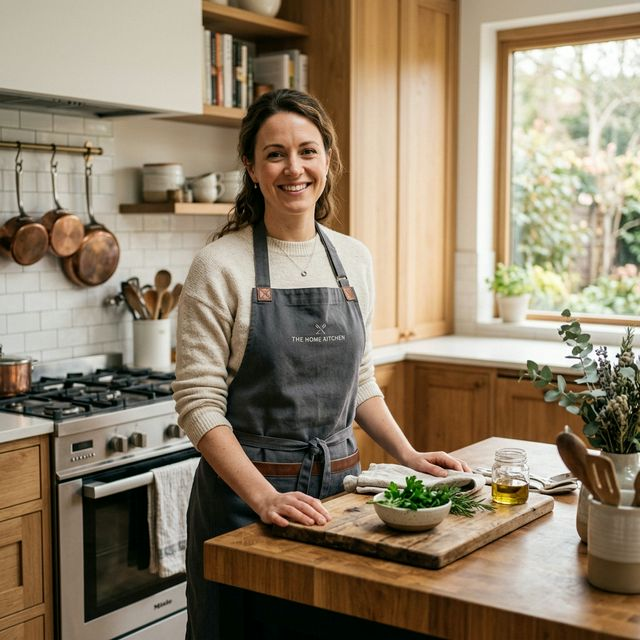

Welcome to my kitchen
Food made with
Passion & Soul.
Hi, I'm the Phoodiemonk! Cooking isn't just a hobby for me—it's a way of life. I believe that every meal has a story, and the best ones are shared with the people we love. From rustic Italian pastas to modern balanced brunches, I love exploring textures and flavors. Explore my menu and try out these recipes in your own kitchen!